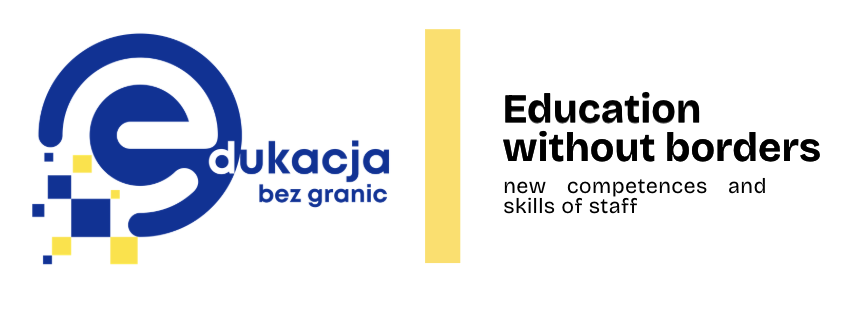
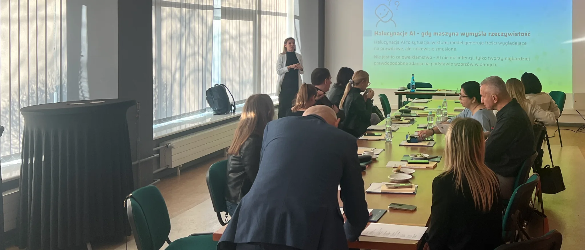

Nowe kompetencje dla pracy doradczej i edukacji dorosłych
Projekt wspiera pracowników publicznych służb zatrudnienia w świecie cyfrowej zmiany, przeciążenia informacyjnego i nowych sposobów uczenia się dorosłych.
Trzy programy. Jedna wspólna idea.
Każdy program odpowiada na realne wyzwania pracy z informacją, ludźmi i procesem uczenia się.
Komunikacja i storytelling
Jasne wystąpienia, prowadzenie rozmów i budowanie przekazu, który angażuje odbiorców.
Myślenie krytyczne
Rozpoznawanie dezinformacji, manipulacji i treści wymagających sprawdzenia.
Grywalizacja
Projektowanie aktywnych i angażujących doświadczeń edukacyjnych dla dorosłych.
 Kurs online
Kurs online
Fake news, dezinformacja i krytyczne myślenie
Samodzielny kurs internetowy z pięcioma modułami, krótkimi ćwiczeniami i materiałami do uzupełnienia. Uczestnik realizuje go we własnym tempie na komputerze lub telefonie.
- 5 modułówod podstaw po fact-checking i deepfake
- około 4 godzinnauka podzielona na krótkie etapy
- dostęp kodempo rejestracji i teście początkowym

Od mobilności edukacyjnej do oferty dla regionu
Wojewódzki Urząd Pracy w Katowicach był i jest beneficjentem projektów mobilności edukacyjnej Erasmus+. Zdobyta wiedza jest przekładana na autorskie programy i praktyczne szkolenia.
- Doświadczenienowoczesne metody poznane podczas mobilności
- Adaptacjarozwiązania dostosowane do pracy doradczej
- Upowszechnianiewiedza przekazywana dalej poprzez szkolenia
Najważniejsze informacje w czterech ścieżkach
Sprawdź terminy i formularze zapisów
Zapisy uruchamiamy po potwierdzeniu harmonogramu poszczególnych szkoleń.